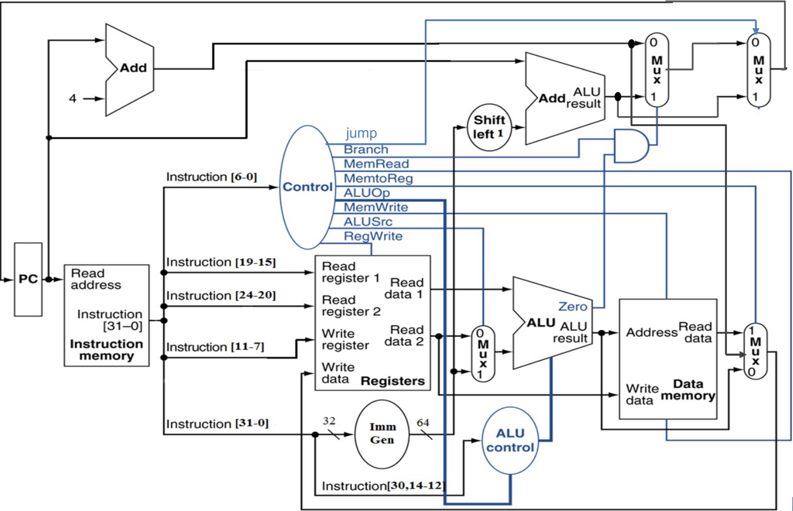
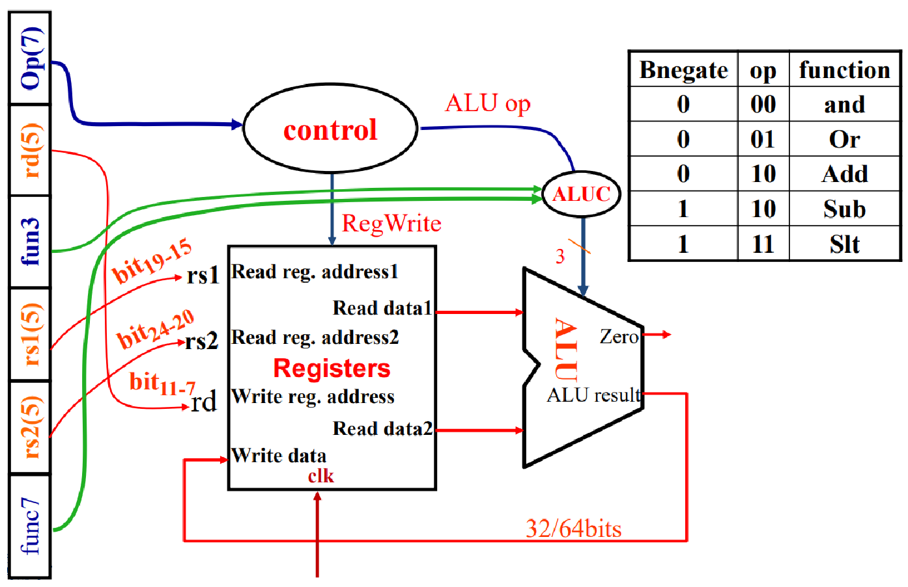
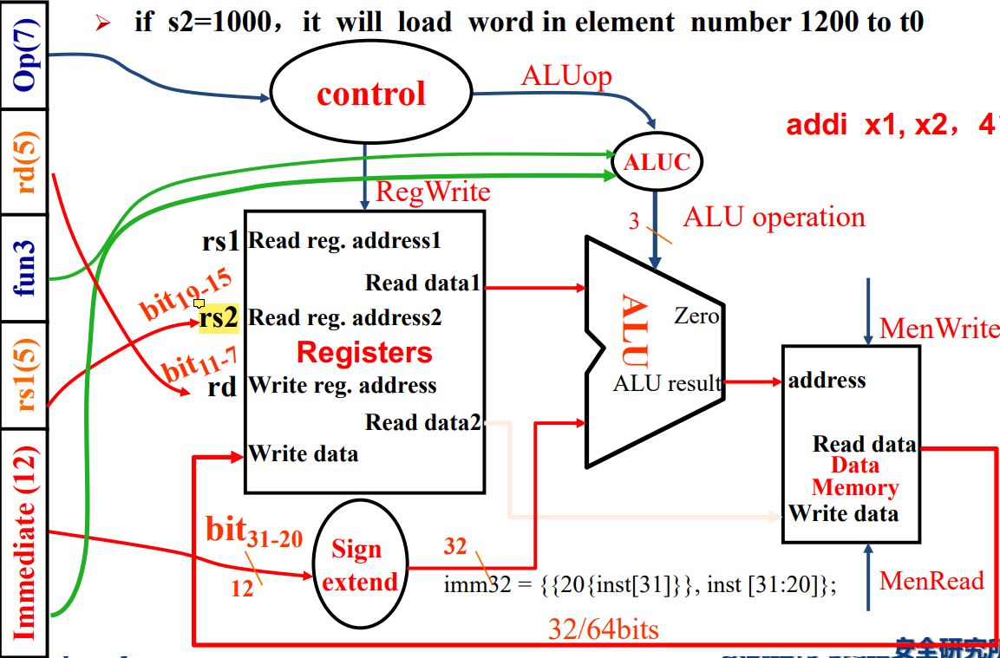
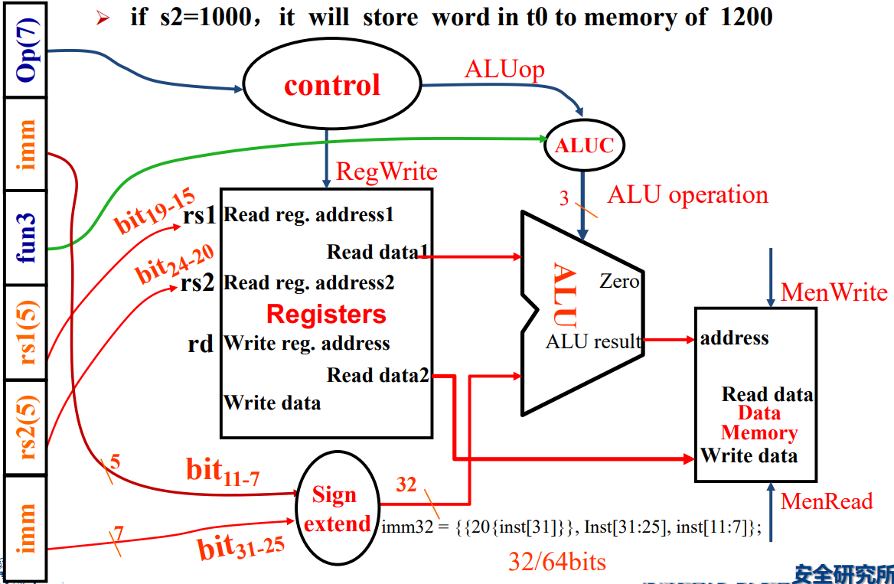
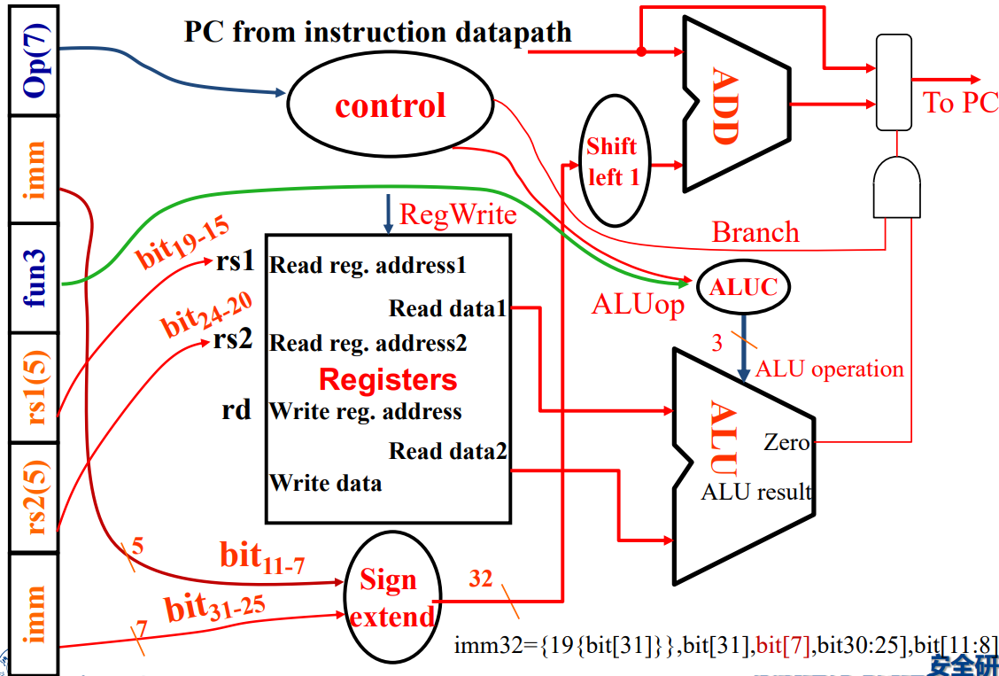
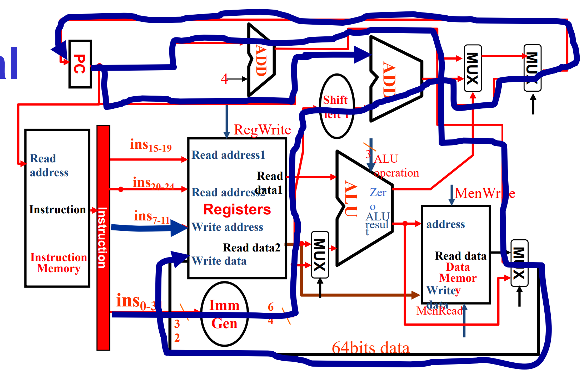
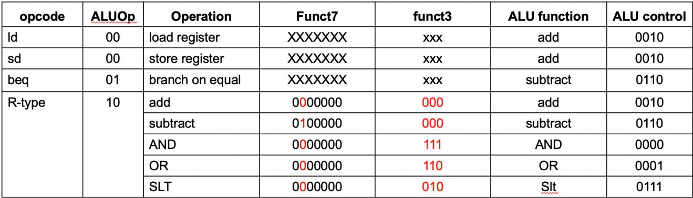

【笔记】计算机组成 (Part III)
Chapter 4-1 Processor: Single Cycle Ver
Introduction
基本的思路是，在之前我们学习了 C -> Assembly Language -> Machine Code 的过程。而 CPU 的工作就是执行机器码。例如，对于指令 add x10, x11, x12，我们要用 CPU 完成以下工作：
-
读取
x11和x12 -
计算两者的和
-
把和写到
x10中
在本门课程中，我们主要关心以下指令：
| Inst Type | Inst |
|---|---|
| R-Type | Arithmetic (add, sub, and, …) |
| I-Type | Load Register (ld) |
| S-Type | Store Register (sd) |
| SB-Type | Branch Jump (beq) |
| UJ-Type | Unconditional Jump (jal) |
The Entire Processor

其实整个一节的关键信息就这一幅图。其中的一些关键点：
-
PC 表示当前的指令位置。
-
Instruction Memory 存放的是系列指令，可以理解为内存中的 Text 段。
-
Registers 寄存器。RISC-V 具有 32 个各 64 位的寄存器。
-
Data Memory 存放的是各种数据，可理解为内存中的 Data 段。
黑色的部分对应 CPU 的 Data Path，蓝色的部分对应 CPU 的 Control Unit。可以看到，Control 部分由 Opcode 全权完成。
接下来根据指令类型的不同，详细分析数据的走向。注意下面的图片仅作示意，不一定严谨。有的图片还有订正。
Processor Datapath Details
1. R-Type

2. I-Type (ONLY ld)

[ATTENTION] 图片有点问题，指令中的 rs1 连到寄存器的 rs2 上了，应当连到 rs1 上。
- 其中
20{inst[31]}是在做符号位拓展，因为本来也支持立即数为负的情况。
3. S-Type (ONLY sd)

4. SB-Type (ONLY beq)

- 这里 ALU 执行的是 sub 运算，然后根据
zero判断是否相等。如果zero为 1（beq 条件满足）且branch为 1（本条指令为 beq），那么就开跳。
5. UJ-Type (ONLY jal)

- 注意是 PC+4 进入到
Write Data中。
Controller
回顾一开始整个单周期 CPU 的图片，我们再贴一次：
根据 Opcode，我们需要通过 Controller 给出以下 8 个具体信号：
- R/W - RegWrite (0/1): 控制是否向寄存器里面写入。
- R/W - MemRead (0/1): 控制是否从内存读取。
- R/W - MemWrite (0/1): 控制是否向内存中写入数据。
- MUX - ALUSrc (0/1): 控制 ALU 下侧的数据来源，0 表示 rs2，1 表示 ImmGen。
- MUX - Branch (0/1): 表示当前指令是否为 branch jumping，用于控制下一个 PC。0 表示不为 branch，1 表示为 branch。结合 Zero 进行食用。
- MUX - Jump (0/1): 控制 PC 是否进行无条件跳转。例如当前指令为
jal时该值为 1。 - MUX - MemtoReg (2 bits): 控制返回到 write address 中的数据来源。分别表示 PC+4，内存读出数据，ALU 计算结果。
- ALU op (2 bits): 用于指导 ALU 进行的运算类型。后续会过一次 ALU Control。
接下来专门讲一下 ALU 的具体控制。可以看到，ALU 的控制可以视为「两级」：
-
第一级：根据 ALU op 将不同类别的指令进行基础区分。
-
第二级：相同 ALU op 的基础上，再根据 funct3 和 funct7 对不同运算的指令进行区分（这部分 funct 从上图的
inst[30,14:12]线钻进去）。

或许可以回顾一下 ALU：

Chapter 4-2 Processor: Pipeline Ver
Intro
-
不同指令耗时不一
例如在下图中，假设各部分的操作时长为：Memory Access, 200ps; ALU, 200ps; RegFile Access, 100ps。
那么执行一次
ld指令耗时为 800ps。执行一次sd指令耗时为 700ps。
-
Pipelining Analogy
一种优化思路是从瓶颈（例如
ld）下手。然而我们还有另外一种优化思路——将【单周期 CPU】改为【流水线 CPU】。所谓流水线，可以参照这幅图：
对应到 CPU 中，我们可以尝试把其分为若干个区域（或步骤），让每个区域同时工作，实现整体的流水线工作。
RISC-V Pipeline Intro
RISC-V CPU 可以划分为以下五个阶段：
- IF: Instruction fetch from memory
- ID: Instruction decode & read from register
- EX: Execute operation or calculate address (ALU Part)
- MEM: Access memory operand
- WB: Write result back to register
然后，一种简单的思路就是，我让五个阶段「流水线式」地工作，下图地两张图生动地说明了这一原理：


理想情况下，这一转变将让 CPU 提速 5 倍（因为有 5 个阶段，当然实际不会到达这个数值，看上图的下半部分可以理解；而且后面还有各种 hazards）。
Hazards
中文意为「冒险」，表示流水线 CPU 实现中可能遇到的各种容易出问题的情况。
1. Structure Hazard
可以想象，如果 data memory 和 instruction memory 是在同一部分的话，在 pipeline 的情形下，有的周期会调用同一块内存，这将产生冲突。
好在 RISC-V 的设计将 data memory 和 instruction memory 分隔开，所以我们几乎不用考虑 Structure Hazard。
2. Data Hazard
-
Problem: Data Hazard
有的时候执行某一个指令，要求前一个指令完成数据写入。考虑这样的两个相邻指令：
add x19, x0, x1 sub x2, x19, x3
add 指令的 WB 必须要在 sub 指令的 ID 之前执行（原因显然），所以两个指令之间无法再「紧密地排列在流水线上」，中间需要隔两个 bubble。
【OBSERVATION】观察上上张图，WB 的写 reg 是在上半 cycle，ID 的读 reg 是在下半 cycle。这种设计的缘由其实在这里有所体现。
-
Solution: Forwarding
解决这种情况的一种方案是 Forwarding。大概思路是有的时候我们不必等待一个数据被写入 reg，然后才再次使用；而是可以直接用某种 extra connection 来直接高效地使用。下图演示了 Forwarding 的解决方案。

然而，并非所有 Data Hazard 都可以用 Forwarding 解决。考虑这样的情形：

显然 sub 已经没办法再提前一个 cycle 了，不然 sub 的 EX 和 ld 的 MEM 将处在同一 cycle，而 sub 的 EX 需要 ld 的 MEM 提供前提数据。
不过，也可以通过修改汇编代码来规避这一问题——

3. Control Hazard
-
Problem: Stall on Branch

类似于这种 Branch Jumping 带来的停顿。上图有点问题，按理来说应当是两行 bubble。
-
Solution: Branch Prediction
字面意思，提前预测 branch 的结果。一般可以分为静态预测 (Static branch prediction) 和动态预测 (Dynamic branch prediction)。
静态预测一般是在软件层面上，根据普遍的 branch 选择结果进行预测。
动态预测一般是在硬件层面上，比如可以基于上一次 branch 的选择结果进行预测（考虑循环的情形，这种预测应当是成功率较高的）。
RISC-V Pipelined Datapath
在解决这一系列 hazards 之前，我们需要对 CPU 的结构进行修改。总的图形如下：

-
四个中间寄存器：
IF/ID，ID/EX，EX/MEM以及MEM/WB。字面意思表明了其所处位置。引入寄存器的目的是显而易见的，是为了使得在流水线上，每个周期的指令依然能正确读取数据。比如观察 Reg 的 Write Data 输入，肯定得引入
MEM/WB的值，而不是当前 Instruction Memory 的值。它们之间差了有 3 个 CC。注意这个改变只是最基本的，保证 pipeline 能正常运作的。它还没有解决 hazards 的问题。
-
Control 信号：
EX，MEM(M)以及WB。回顾单周期 CPU，除去
jal使用的 jump 信号，Controller 一共给出 7 个信号。根据其作用阶段的不同，将其分为-
EX (作用于 EX 阶段)：包含
ALUop，ALUsrc。 -
MEM (作用于 MEM 阶段)：包含
Branch，MemRead，MemWrite。 -
WB (作用于 WB 阶段)：包含
MemToReg，RegWrite。
可以看到，在流水线上 Controller 对应的寄存器的大小是越来越小的，这一点也很好理解，毕竟到后面的 stage 某些 control signal 就不再起作用了。
-
Data Hazard Solution
1. R-R Case
情景：考虑以下的 RISC-V 指令：
1sub x2, x1, x3
2and x12, x2, x5
3or x13, x6, x2
4add x14, x2, x2
5sd x15, 100(x2)

从上图可以看出，Data Hazard 发生当且仅当
-
前序指令的
rd和后序指令的rs1/rs2重合，即1a.
EX/MEM.RegisterRd=ID/EX.RegisterRs11b.
EX/MEM.RegisterRd=ID/EX.RegisterRs22a.
MEM/WB.RegisterRd=ID/EX.RegisterRs12b.
MEM/WB.RegisterRd=ID/EX.RegisterRs2四条中有一条满足即可。
-
执行写入操作
EX/MEM.Controller.RegWrite$= 1$MEM/WB.Controller.RegWrite$= 1$要求哪条满足主要是看上面选的是 1 还是 2。
-
不是虚空写入
EX/MEM.RegisterRd$\neq 0$MEM/WB.RegisterRd$\neq 0$要求哪条满足主要是看上面选的是 1 还是 2。
所以，我们可以加入这样的逻辑来完成 Forwarding：

2. Load-R Case
情景：考虑以下的 RISC-V 指令：
1ld x2, 20(x1)
2and x4, x2, x5
3or x8, x2, x6
4add x9, x4, x2

可以发现，第二行的指令无论如何都没有机会执行了，所以 add x4, x2, x5 必然会推后一个 CC。对于这一情况的判断，我们可以在上图橙色处完成。判断条件为
-
前序指令的
rd和后序指令的rs1/rs2重合，即a.
ID/EX.RegisterRd = IF/ID.RegisterRs1b.
ID/EX.RegisterRd = IF/ID.RegisterRs2两条中有一条满足即可。注意上面条件的两侧不要搞反。
-
执行 Load 操作
ID/EX.Controller.MemRead$= 1$
如果条件满足，我们首先要进行 Stall（熄火）。操作为
-
将当前指令（也就是下一个 CC 的 ID/EX）寄存器全部归零。
-
再次读取 PC，即不调到 PC+4。
Stall 后，我们再执行 Forwarding 来保证指令的正常运行。这一部分的 Forwarding 操作和 R-R Case 几乎一致，唯一的区别是 Forwarding 的执行是在判断生效的两个 CC 后。
下图展示了考虑 Load-R Case 的 Pipeline。可以看到主要区别是加入了 Stall 的考量。